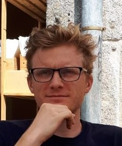
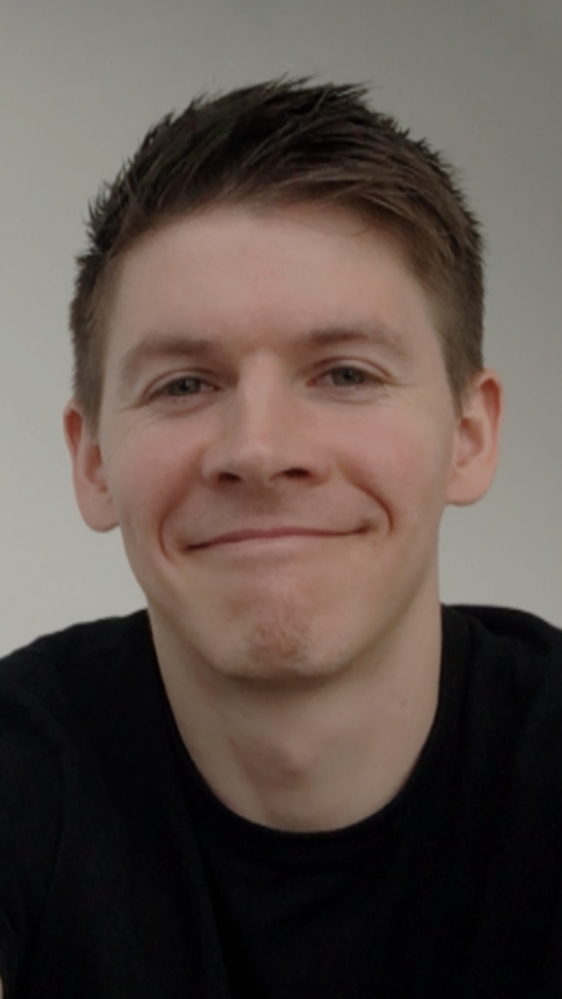
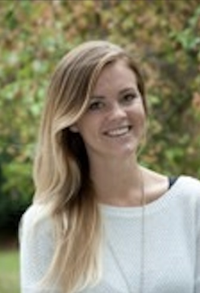

|
Research Group
Postdoctoral Research Fellows
 |
Leonardo Novelli
Current Position: Postdoctoral Fellow, Monash University, Nov. 2020 - to date
Education:
PhD (Complex Systems), University of Sydney, Australia, 2017-2020. Supervisor: Joseph Lizier
Master’s of Science, Neural Systems and Computation, 2014-2016, ETH Zurich and University of Zurich, Switzerland
Bachelor’s of Science, Mathematics, 2010-2013, Università degli Studi Roma Tre, Rome, Italy
Keywords: Network neuroscience; Information theory; Dynamic causal modelling
Google Scholar — Researchgate
|
PhD Students
|
 |
Hannes Almgren
Education:
PhD candidate at Ghent University
Master’s of Science, Experimental and Theoretical Psychology, Ghent University, Belgium
Bachelor’s of Science, Experimental and Theoretical Psychology, Ghent University, Belgium
Supervisors: Daniele Marinazzo (Main), Adeel Razi
Start date: October 2016 – present
Keywords: Dynamic causal modelling; Resting state functional MRI; Ageing and functional compensation
|
 |
Lingbin Bian
Education:
PhD candidate at Monash University, Department of Mathematics
Master’s of Science, Signal Processing and Communications, The University of Edinburgh
Bachelor of Engineering, Industrial Electronics and Control, Liverpool John Moores University (LJMU) - University of Shanghai for Science and Technology (USST)
Supervisors: Jonathan Keith (Main), Adeel Razi, Tiangang Cui
Start date: December 2017 – present
Keywords: Bayesian inference; Stochastic block models; Brain networks, Resting state functional MRI
|
|
 |
Devon Stoliker
Education:
PhD candidate at Monash University
Bachelor’s of Science (Honours), Psychology, University of Guelph, Canada
Supervisors: Adeel Razi (Main) and Gary Egan
Start date: July 2019 – present
Keywords: Psychedelics; Dynamic causal modelling; Consciousness
|
 |
Aswin Paul
Education:
PhD candidate (Electrical Engineering) at Indian Institute of Bombay - Monash Academy
Master’s of Science, Physics, National Institute of Technology (VNIT), Nagpur, India
Bachelor’s of Science, Physics, St. Stephen’s College (Delhi University), New Delhi, India
Supervisors: Adeel Razi (Main) and Manoj Gopalkrishnan (Main)
Start date: July 2019 – present
Keywords: Biological self-organization; Variational inference; Free-energy principle
|
Research Assistants
 |
Garance Delagneau
Education:
PhD candidate (Clinical Neuropsychology) at Monash University
Master’s of Psychology, University of Melbourne, Australia
Bachelor’s of Science, University of Montreal, Canada
|
 |
Sidhant Chopra
Education:
PhD candidate (Clinical Neuropsychology) at Monash University
Bachelor’s of Science (Psychology), Australian National University
|
Honours Students
 |
Hannah Cummins
Education:
Bachelors of Psychology, (Honours), Candidate, Monash University, Melbourne, Australia
Keywords: Dynamic causal modelling, Parkinson’s Disease
|
Alumni
|
|
Sean Ng
Education:
Bachelors of Psychology, (Honours), Monash University, Melbourne, Australia
Keywords: Dynamic causal modelling, Alzheimer’s Disease, Depression
Last role: Honours Thesis Student, 2019
|
|
 |
Anna Carmichael
Education:
PhD (Clinical Neuropsychology) at Monash University
Master’s of Arts, Psychology, Brandies University, USA
Bachelor’s of Science (Honours), Psychology, Texas A&M University, USA
Last role: Research Assistant, 2019
|
 |
Seda Sacu
Education:
Masters of Science (Brain and Mind), Humboldt University of Berlin, Germany
Bachelor’s of Arts (Psychology), Hacettepe University, Turkey
Last role: Master’s Thesis Student, 2019
|
|
|
Ensor Palacios
Education:
PhD Candidate (funded by Wellcome Trust) at University of Bristol, U.K.
Masters of Science (Psychology), Università degli Studi di Padova, Italy
Last role: Master’s Thesis Student, 2018
|
 |
Andrew Dixon
Education:
Bachelors of Aerospace Engineering (Honours) and Bachelor of Science, Monash University, Melbourne, Australia
Last role: Summer Research Student, 2018/19
|
 |
Didi Chi
Education:
Masters of Engineering (Electrical), Bachelors of Science (Electrical Systems), University of Melbourne, Australia
Last role: Summer Research Student, 2018/19
|
|